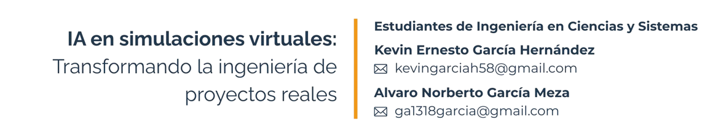

6 IA en simulaciones virtuales: Transformando la ingeniería de proyectos reales.

Palabras clave: Simulaciones Virtuales, Inteligencia Artificial, Optimización de Proyectos, Gemelos Digitales, Modelos y Entornos.
6.1 Introducción
Cada día, la complejidad del mundo aumenta. Satisfacer las necesidades humanas y hacer la vida más fácil y accesible ha llevado a la ingeniería a implementar sistemas más complejos, donde cada caso debe ser estudiado, evaluado y comprobado para minimizar el número de errores de un sistema. Aquí es donde entran en juego las simulaciones virtuales, debido a que existe una necesidad de probar diferentes casos en entornos controlados.
La inteligencia artificial toma protagonismo para ser una herramienta la cual viene a maximizar los tiempos, costos y ser de gran ayuda para rear sistemas más complejos con una alta fiabilidad.
6.2 Artículo
Simulaciones virtuales
Hoy en día, se utilizan simulaciones virtuales para replicar infraestructuras, sistemas y procesos físicos, lo que permite realizar un análisis que predice los comportamientos en entornos controlados, antes de su integración en la vida diaria. Con el paso del tiempo, estas herramientas han avanzado, desde modelos basados en ecuaciones matemáticas hasta sistemas avanzados que incluyen algoritmos de gran velocidad.
Actualmente, estas herramientas posibilitan la creación de infraestructuras críticas y procedimientos médicos en un ambiente seguro, detectando peligros, optimizando la eficiencia o simplemente para propósitos de experimentación.
Implementación de la inteligencia artificial
La inteligencia artificial ha crecido exponencialmente en los últimos años, jugando un papel muy importante en el día a día. Ha sido un catalizador clave en este campo, permitiendo que las simulaciones lleguen a ser altamente precisas. La IA no solo hace simulaciones que pueden replicar la realidad, sino que también pueden anticipar comportamientos futuros y con esto encontrar soluciones de optimización, todo esto gracias a los avances como redes neuronales, aprendizaje automático y procesamiento en tiempo real.
Un ejemplo de cómo ha avanzado la IA para poder implementarse en las simulaciones son los gemelos digitales, siendo réplicas virtuales de objetos o sistemas físicos, donde se utilizan redes neuronales para poder predecir fallos o ajustar parámetros de producción [4].
Tecnologías clave
Algunas tecnologías esenciales, como el Deep Learning, se emplean en la implementación de simulaciones virtuales, utilizando algoritmos de redes neuronales convolucionales (CNN) y redes neuronales recurrentes (RNN); permitiendo el análisis de datos históricos en tiempo real para identificar patrones y anticipar las conductas que se presentarán en la Simulación.
Además, mediante la aplicación del Refuerzo de Aprendizaje (RL) es posible replicar interacciones entre humanos y robots en fábricas inteligentes, ya que se capacitan a los agentes en ambientes virtuales a través de la técnica del ensayo y el error.
Con el uso de gemelos digitales en modelación 3D y 4D se pueden crear réplicas virtuales de infraestructuras con actualizaciones de datos, en tiempo real, con ayuda de sensores IoT. Además, se tiene software como ANSYS que predice tensiones en materiales o flujos de fluidos empleando IA, lo que reduce el tiempo de análisis de manera significativa.
El Edge AI se refleja en simulaciones críticas, por ejemplo, al ejecutar modelos en dispositivos locales para simular entornos de conducción en tiempo real, dónde las decisiones en milisegundos son vitales.
Con el uso de Federated Learning se llegan a entrenar modelos de IA descentralizados, estos preservando la privacidad de los datos para usarse en simulaciones médicas donde se analizan historiales sin compartir información sensible.
Se tiene la generación de entornos virtuales interactivos a partir de imágenes 2D, utilizados en diseños arquitectónicos o en entrenamiento de robots. Y por último, también se exploran algoritmos cuánticos para poder modelar moléculas en la farmacología, esto permitiendo la reducción de tiempos en el descubrimiento de nuevos fármacos.
Sectores beneficiados
Son varios sectores los que se benefician del uso de simulaciones virtuales con la implementación de IA, por ejemplo en la construcción e infraestructura al analizar variables como la disponibilidad de recursos y el clima a partir de un modelo predictivo [4]. También se pueden llegar a detectar fallos estructurales mediante redes neuronales, tomando de referencia el análisis de vibraciones y datos históricos.
El sector de salud y biomedicina se ve altamente beneficiado, gracias a modelos 3D de órganos, permitiendo hacer una simulación a los cirujanos para intervenciones complejas; el diseño de proteínas terapéuticas para neutralizar venenos se realizan a partir de simulaciones de interacciones moleculares, permitiendo el descubrimiento de varios fármacos [3].
La manufactura y automatización cuenta con simulaciones para poder entrenar robots en tareas de ensamblaje con una precisión de 0.1mm. También una visión computacional y redes generativas antagónicas (GANs), que logran identificar defectos en microsegundos inspeccionando las piezas en líneas de producción [3].
Por último, la energía y sostenibilidad se ven beneficiadas con herramientas que predicen la demanda para la optimización de distribución, usando algoritmos de clustering, donde se obtiene simulaciones generadas por IA que evalúan ángulos de incidencia y sombras, maximizando la eficiencia en granjas solares [3].
6.3 Conclusiones
Las simulaciones virtuales impulsadas por inteligencia, artificial están transformando la ingeniería de proyectos al ser más precisas y eficientes al momento de predecir. Debido a tecnologías y técnicas como aprendizaje profundo, gemelos digitales y aprendizaje por refuerzo, es posible mejorar diferentes aspectos como la anticipación de fallos, optimización de diseños y reducción de costos.
Estas tecnologías no solo mejoran la eficiencia, sino que también incitan a la innovación en la ingeniería. A medida que la IA avanza las simulaciones se ven fortalecidas y los casos a cubrir en dichas pruebas llegan a ser, en su mayoría, más complejas y alcanzables en todos los escenarios. En el futuro, esto permitirá tener sistemas más confiables y seguros.
6.4 Referencias
[1] The Black Box Lab. “World Models: cuando la IA aprende de sí misma.” The Black Box Lab (blog), 2 de octubre de 2024. theblackboxlab.com
[2] Patricia Morales. “Descubre cómo la simulación puede revolucionar tus proyectos tecnológicos.” eduMaster+ (blog), 19 de julio de 2023.
edumasterplus.com[3] Erik Erlandson. “Tendencias IA, automatización y virtualización que definirán la tecnología empresarial en 2025.” CepymeNews, n. 2 (2025).cepymenews.es
[4] Elena. “Simulación de Proyectos con IA: El Futuro de la Planificación Inteligente.” Metaversos Agency (blog), 8 de noviembre de 2024. metaversos.agency